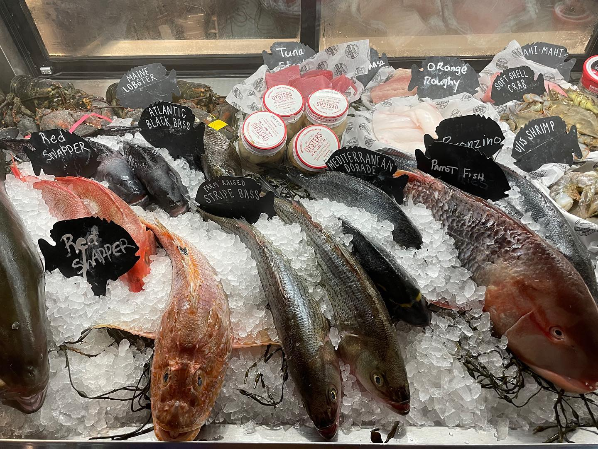
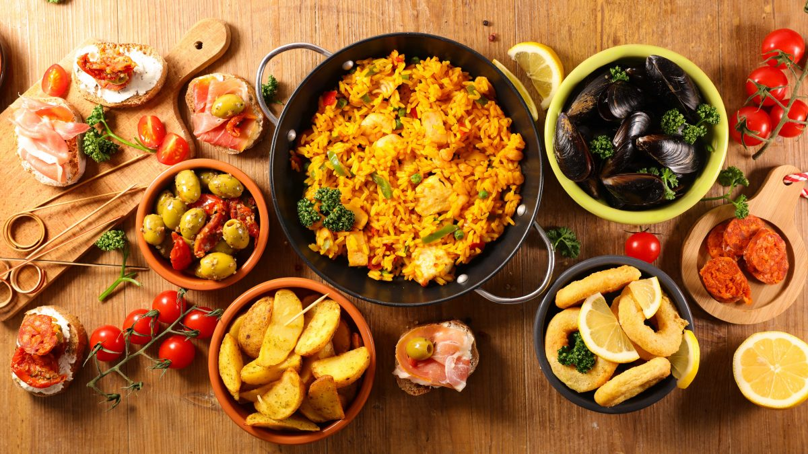

Grocery Stores
Although Taniti is a small country, there are a few grocery stores which include:
- Two supermarket: Stocked with clothes, food, drinks, medicine, recreational equipment, alcohol, cleaning supplies, and many more things that will make your stay more manangeable, and fun.
- Two grocery stores: Although a lot smaller than the supermarkets, they carry more local produce, fresh caught fish, and souvenirs to take home. This option also supports local businesses and industries more, with the cost of less variety.
- One convenience store: Perfect for a quick meal, snacks, drinks, or gasoline for a car. This store carries a little bit of everything, but has a very limited variety compared to the other stores. However, this store stays open 24 hours a day making it a good choice as soon as the other stores close.

Restaurants
Taniti has many choices for restaurants. The restaurants they offer are as followed:
- Five local restaurants:These restaurants serve the local dishes that Taniti eats, which involves local caught fish and rice.
- Three American restaurants:Serving dishes like hamburgers, chicken tenders, and fries, these restaurants cater to the American cuisine.
- Two Pan-Asian restaurants:If you are looking for any Asian dish, these two restaurants will most likely have them, like sushi, pad thai, fried rice, orange chicken, and many other Asian inspired dishes.